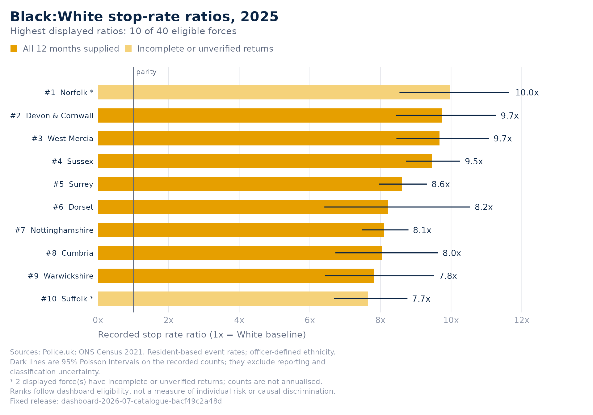
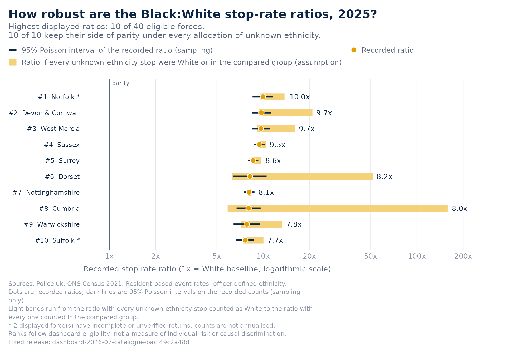
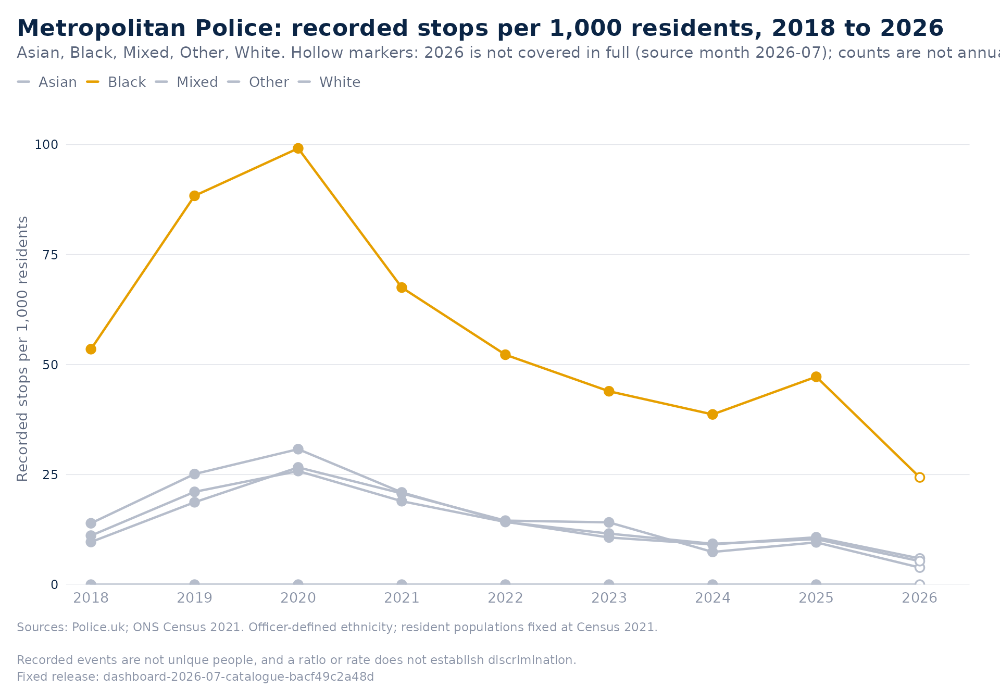
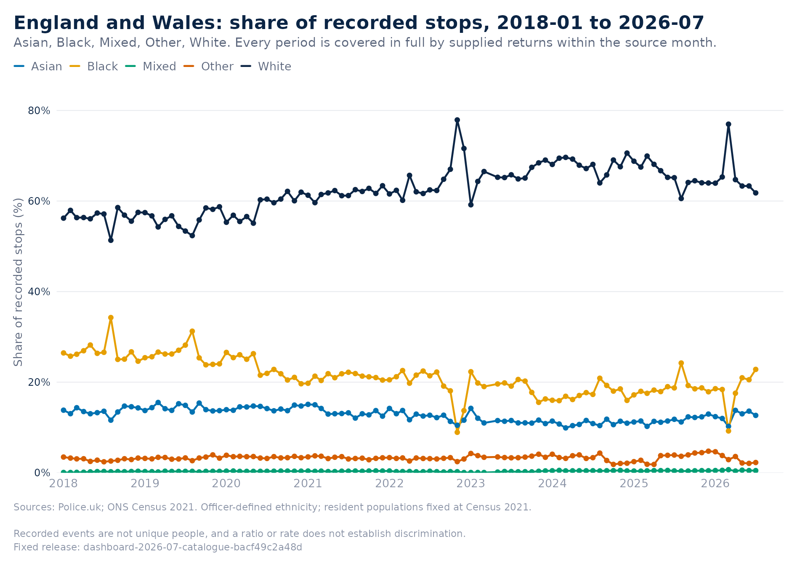
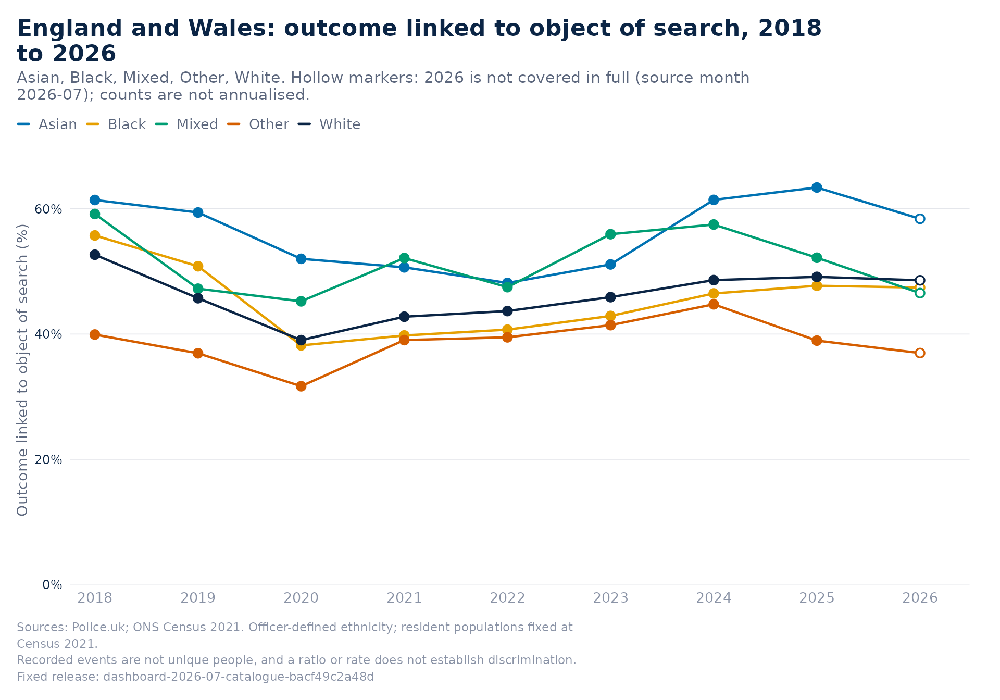

This vignette is for people who need to say something accurate about stop and search in one place: a police force area or a council. It needs no statistics beyond reading the statements the package writes, and nothing here requires a network connection.
One call for the evidence
p <- btg_profile(force = "metropolitan", draws = 500)
p
#> BlackThriveSS evidence profile: Metropolitan Police, 2025
#> Release dashboard-2026-07-catalogue-bacf49c2a48d (source month 2026-07)
#>
#> Reporting coverage
#> * Metropolitan Police supplied stop and search returns for all 12 months of
#> 2025.
#>
#> Black people compared with White residents
#> * Recorded stops of Black people in 2025: 47.2 per 1,000 Black residents,
#> 4.6x the rate for White residents (10.3 per 1,000), 95% interval 4.5x to
#> 4.6x, from 56,116 and 48,798 recorded stops.
#> * That Black:White ratio ranks 30th of 40 forces with an eligible comparison;
#> sampling variability alone puts the rank between 28 and 32.
#> * 8,826 of the 138,638 recorded stops in 2025 (6.4%) have no recorded
#> ethnicity. Counting every one of them as White would put the Black:White
#> ratio at 3.9x; counting every one as Black would put it at 5.3x. The ratio
#> stays above parity under every allocation.
#> * Compared with 2024, the Black:White ratio in 2025 was 10% higher (95%
#> interval 1.08x to 1.12x the earlier ratio); both years are covered in full.
#>
#> Asian people compared with White residents
#> * Recorded stops of Asian people in 2025: 10.8 per 1,000 Asian residents,
#> 1.0x the rate for White residents (10.3 per 1,000), 95% interval 1.0x to
#> 1.1x, from 19,557 and 48,798 recorded stops.
#> * That Asian:White ratio ranks 36th of 40 forces with an eligible comparison;
#> sampling variability alone puts the rank between 34 and 37.
#> * 8,826 of the 138,638 recorded stops in 2025 (6.4%) have no recorded
#> ethnicity. Counting every one of them as White would put the Asian:White
#> ratio at 0.9x; counting every one as Asian would put it at 1.5x. Which side
#> of parity the ratio falls on depends on those stops.
#> * Compared with 2024, the Asian:White ratio in 2025 was 6% higher (95%
#> interval 1.03x to 1.09x the earlier ratio); both years are covered in full.
#>
#> Mixed people compared with White residents
#> * No stops of Mixed people were recorded under officer-defined ethnicity in
#> 2025; White residents were stopped at 10.3 per 1,000.
#> * The Mixed:White comparison does not meet the dashboard's display rule (a
#> positive ratio from at least 200 stops with known ethnicity and comparable
#> resident populations), so it carries no rank.
#>
#> People of other ethnic groups compared with White residents
#> * Recorded stops of Other people in 2025: 9.6 per 1,000 Other residents, 0.9x
#> the rate for White residents (10.3 per 1,000), 95% interval 0.9x to 1.0x,
#> from 5,341 and 48,798 recorded stops.
#> * That Other:White ratio ranks 35th of 39 forces with an eligible comparison;
#> sampling variability alone puts the rank between 32 and 36.
#> * 8,826 of the 138,638 recorded stops in 2025 (6.4%) have no recorded
#> ethnicity. Counting every one of them as White would put the Other:White
#> ratio at 0.8x; counting every one as Other would put it at 2.5x. Which side
#> of parity the ratio falls on depends on those stops.
#> * Compared with 2024, the Other:White ratio in 2025 was 16% higher (95%
#> interval 1.11x to 1.21x the earlier ratio); both years are covered in full.
#>
#> Section 60 searches
#> * Metropolitan Police recorded 3,024 searches under Section 60 in 2025, 73%
#> of them of Black people.
#>
#> National context
#> * Across England and Wales, 505,586 stops were recorded in 2025; 14.7% led to
#> an arrest, and the share of searches whose outcome was linked to what was
#> searched for was 47.7% for Black people and 49.1% for White people.
#>
#> Tables: $comparisons, $change, $coverage, $section60, $national; qualifications: $caveatsEach statement carries its own qualification: the interval, the rank and how far sampling alone could move it, how far the stops with no recorded ethnicity could move the ratio, whether both years of a change were covered in full. The tables behind the statements are in the object:
p$comparisons[c("group", "ratio", "ci_lower", "ci_upper", "rank", "n_eligible", "rank_lower", "rank_upper", "parity_direction")]
#> group ratio ci_lower ci_upper rank n_eligible rank_lower rank_upper
#> 1 Black 4.5734077 4.5182599 4.6292287 30 40 28 32
#> 2 Asian 1.0426963 1.0255432 1.0601362 36 40 34 37
#> 3 Mixed 0.0000000 NA NA NA 7 NA NA
#> 4 Other 0.9296962 0.9038014 0.9563329 35 39 32 36
#> parity_direction
#> 1 above
#> 2 sensitive
#> 3 sensitive
#> 4 sensitive
p$change[c("group", "ratio_from", "ratio_to", "change", "change_direction", "comparable_coverage")]
#> group ratio_from ratio_to change change_direction comparable_coverage
#> 2 Black 4.1654667 4.5734077 1.097934 higher TRUE
#> 1 Asian 0.9840448 1.0426963 1.059602 higher TRUE
#> 3 Mixed 0.0000000 0.0000000 NaN <NA> TRUE
#> 4 Other 0.7994619 0.9296962 1.162903 higher TRUE
p$coverage[c("status", "months_supplied", "months_missing")]
#> $status
#> [1] "all_months_supplied"
#>
#> $months_supplied
#> [1] 12
#>
#> $months_missing
#> [1] 0A council profile works the same way, without ranks or coverage, because council counts depend on published stop coordinates:
btg_profile(council = "E09000022", draws = 500)$statements[1:3]
#> coverage
#> "Lambeth's counts are located by published stop coordinates, which some forces withhold, so they undercount and carry no rank or display rule."
#> Black
#> "Recorded stops of Black people in 2025: 62.7 per 1,000 Black residents, 7.3x the rate for White residents (8.6 per 1,000), 95% interval 6.9x to 7.7x, from 4,773 and 1,501 recorded stops."
#> Black
#> "321 of the 6,993 recorded stops in 2025 (4.6%) have no recorded ethnicity. Counting every one of them as White would put the Black:White ratio at 6.0x; counting every one as Black would put it at 7.8x. The ratio stays above parity under every allocation."The charts a briefing needs
The ranking chart with the area highlighted, as on the dashboard:
year <- btg_get_data("force_ethnicity_year", years = 2025)
btg_plot_disparity(year, highlight = "metropolitan")
The same comparisons with their uncertainty shown honestly:
btg_plot_sensitivity(year, highlight = "metropolitan")
How the area’s ratios have moved, with incomplete periods marked:
met <- btg_get_data("force_ethnicity_year", force = "metropolitan")
btg_plot_trend(met)
Rates per 1,000 residents with one group emphasised and the rest as context:
btg_plot_trend(met, measure = "rate", highlight = "Black")
National context: the share of recorded stops by group, month by month, and the outcome-linked search rate by group.
btg_plot_trend(btg_get_data("national_month_ethnicity"), measure = "share")
btg_plot_trend(btg_get_data("hit_rate_ethnicity_year"))
A complete briefing in one file
btg_report() renders a self-contained HTML briefing from
the package’s installed R Markdown template: the statements, the charts
above, the tables behind them, monthly coverage, the methods and their
limits, and the code and citations that reproduce every figure. It needs
the rmarkdown package and Pandoc, which RStudio and Positron
include.
btg_report(force = "metropolitan", file = "metropolitan-2025.html")
btg_report(council = "E09000022", year = 2024, file = "lambeth-2024.docx")
btg_report(force = "kent", year = 2024, file = "kent-2024.pdf")A .docx file name, or format = "docx",
gives the same briefing as a Word document for people who need to edit
it or paste from it, styled by a reference document installed with the
template; .pdf gives a PDF where a LaTeX installation such
as TinyTeX is available. The briefing opens with an at-a-glance panel
and the findings grouped by topic, and numbers its tables and figures.
btg_table() sets any data frame in the same style inside
your own R Markdown document, whichever of the three formats you knit
to:
btg_table(head(btg_get_data("national_year")$data[c("year", "stops", "arrest_rate", "hit_rate")]),
caption = "National totals by year")| year | stops | arrest_rate | hit_rate |
|---|---|---|---|
| 2018 | 319569 | 15.7 | 53.6 |
| 2019 | 524424 | 12.8 | 47.4 |
| 2020 | 676628 | 11.4 | 40.2 |
| 2021 | 541523 | 12.2 | 42.8 |
| 2022 | 477044 | 12.8 | 43.7 |
| 2023 | 449005 | 14.0 | 44.5 |
The template is also listed in those editors under New R Markdown, From Template as “BlackThriveSS briefing”, for anyone who wants to add their own sections.
Taking numbers out of R
btg_export() writes a dataset to CSV with a JSON sidecar
that records the release, checksums, selection, citation and
limitations:
csv <- tempfile(fileext = ".csv")
files <- btg_export(btg_get_data(force = "metropolitan"), csv)
basename(files)
#> [1] "file1c583717b01a.csv" "file1c583717b01a.json"
#> [3] "file1c583717b01a-coverage.csv"
unlink(files)And every term the package uses has one definition:
g <- btg_glossary()
g[g$term %in% c("ratio", "allocation range", "coverage"), ]
#> term
#> 5 ratio
#> 7 allocation range
#> 10 coverage
#> definition
#> 5 A group's rate per 1,000 residents divided by the White rate. 1x is parity; 4x means four times the recorded rate of White residents. It is descriptive and does not establish discrimination.
#> 7 The ratio if every stop with unknown ethnicity were counted as White (lower end) or as the compared group (upper end). Any allocation of those stops gives a ratio inside the range.
#> 10 Whether a force's monthly return for a month is supplied, missing or unverified. Supplied is not proof of complete recording; missing is never treated as zero.Saying it right
A few rules that the statements follow and that are worth keeping in any briefing built on them:
- Say recorded stops per 1,000 residents, not the chance of being stopped. Residents stand in for the people present in an area.
- Give the interval and the allocation range with the ratio, and the coverage with any change.
- Ranks move a long way under sampling alone; quote the rank interval.
- A ratio describes recorded stops relative to population. It does not, by itself, show discrimination, and it does not separate recording practice, who is present and policing decisions.